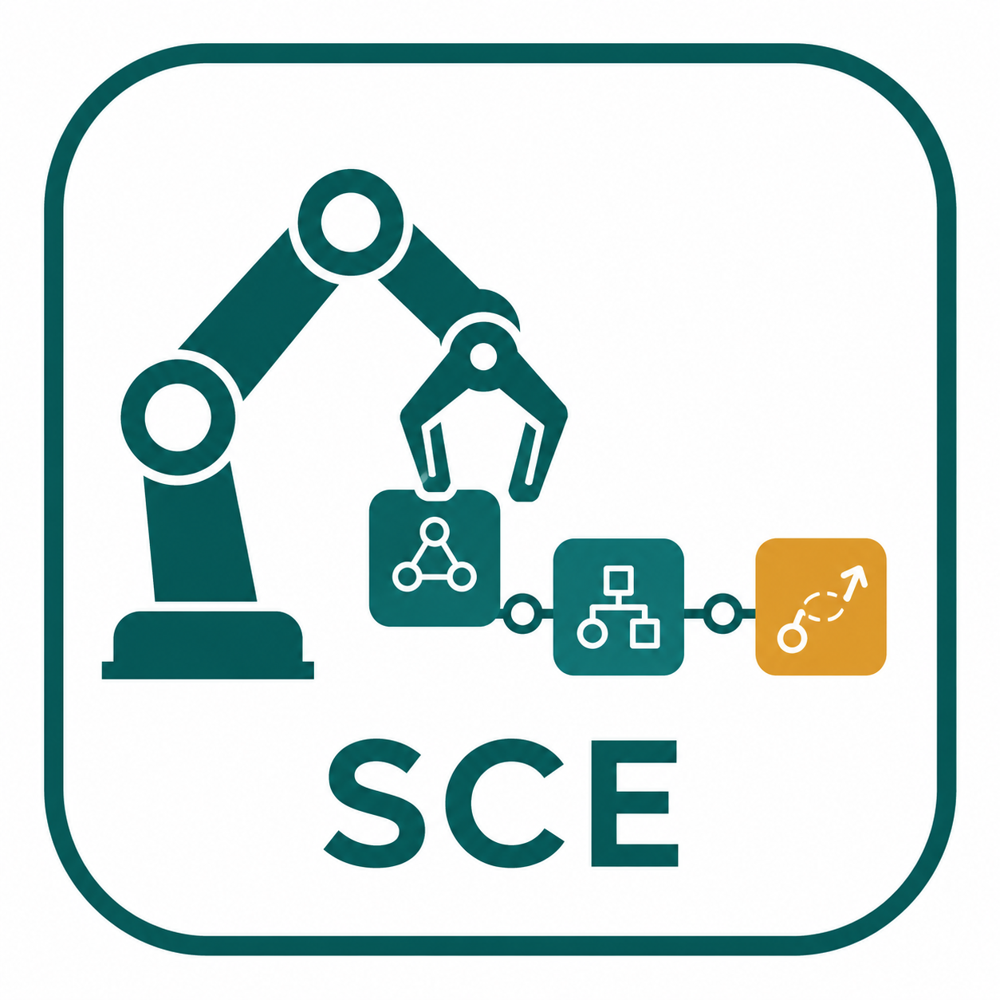
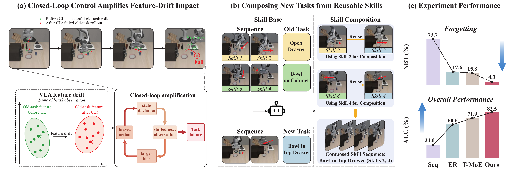
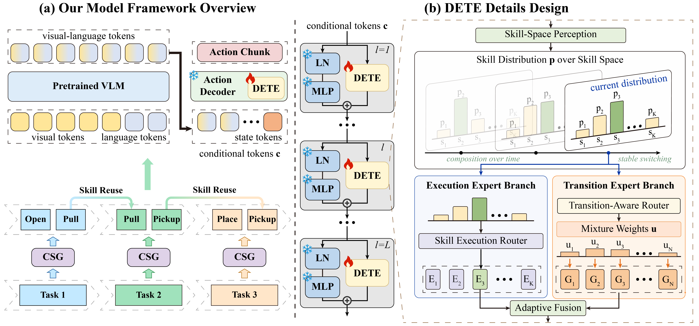
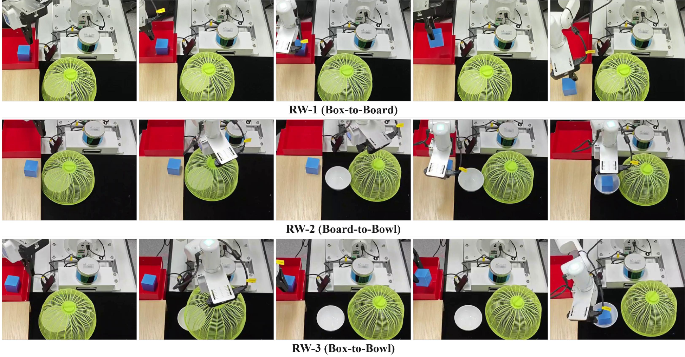
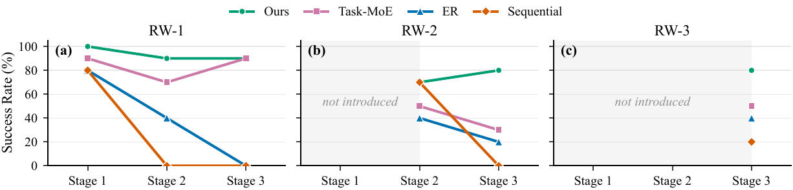
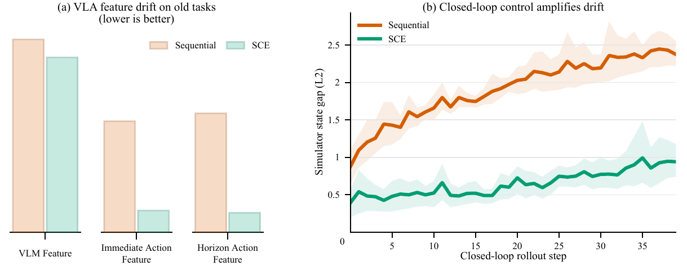
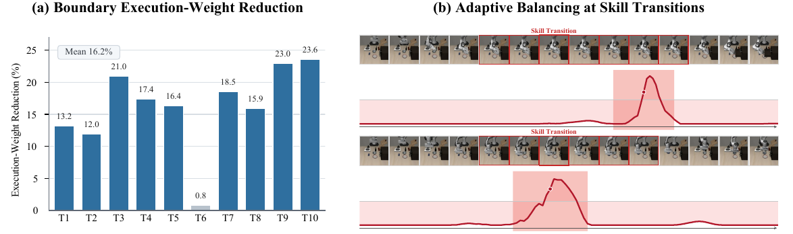

Compositional Skill Grounding
CSG partitions each demonstration into temporally coherent segments using robot-state dynamics, then uses VLM-grounded induction to assign skill labels and update the skill base.

Skill-Compositional ExpertsEmbodied Continual Learning
SCE enables robots to continually acquire new tasks by decomposing demonstrations into reusable skills and composing them through dual execution-and-transition experts.

Embodied Continual Learning (ECL) aims to enable robots to continually acquire new manipulation tasks while retaining previously learned behaviors under closed-loop control. Compared with conventional continual learning, ECL suffers from more severe catastrophic forgetting. Feature drift accumulated under closed-loop control progressively propagates through sequential decision-making, leading to degradation of previously learned behaviors. A key challenge in ECL lies in structured skill reuse across continually evolving tasks, since existing methods primarily focus on skill learning without explicitly organizing them for coherent task execution.
To address this issue, we propose SCE, a Skill-Compositional Experts framework for ECL. SCE builds a skill base via Compositional Skill Grounding (CSG), which decomposes task demonstrations into reusable skills. Based on this, Dual Execution-and-Transition Experts (DETE) enable new task learning through skill composition, where one branch ensures skill execution and the other supports transitions between skills for coherent behavior. Experiments on LIBERO benchmarks and real-world manipulation tasks demonstrate that SCE consistently improves retention and overall task performance. Further feature drift analyses and ablation studies verify the effectiveness of our method. The code and real-world datasets will be made publicly available.
Method
CSG partitions each demonstration into temporally coherent segments using robot-state dynamics, then uses VLM-grounded induction to assign skill labels and update the skill base.
DETE routes each input to a skill-specific expert through a skill distribution, giving each skill dedicated capacity and reducing interference with unrelated skills.
A transition-aware router models cross-skill dependencies around skill boundaries, and adaptive fusion balances execution and transition outputs during closed-loop action generation.

Results
The reported metrics follow the paper protocol: FWT measures new-task performance, NBT measures forgetting on previously learned tasks, AUC summarizes performance across stages, and Final SR reports final-stage average success.
Final SR with 4.3 NBT and 82.5 AUC.
Final SR with 0.5 NBT and 70.0 AUC.
Final SR with 0.0 NBT and 82.8 AUC.
| Method | LIBERO-Goal | LIBERO-Long | ||||||
|---|---|---|---|---|---|---|---|---|
| FWT | NBT | AUC | Final SR | FWT | NBT | AUC | Final SR | |
| Sequential | 81.2 | 73.7 | 24.0 | 7.4 | 62.4 | 58.4 | 14.8 | 4.0 |
| ER | 75.2 | 17.6 | 60.6 | 45.0 | 74.4 | 22.8 | 56.2 | 51.8 |
| Task-MoE | 84.5 | 15.8 | 71.9 | 64.8 | 72.8 | 12.0 | 63.8 | 57.8 |
| SCE | 86.2 | 4.3 | 82.5 | 83.4 | 69.6 | 0.5 | 70.0 | 73.4 |

| Method | FWT | NBT | AUC | Final SR |
|---|---|---|---|---|
| Sequential | 56.7 | 50.0 | 27.2 | 6.7 |
| ER | 53.3 | 26.7 | 36.7 | 20.0 |
| Task-MoE | 63.3 | 10.0 | 57.8 | 56.7 |
| SCE | 83.3 | 0.0 | 82.8 | 83.3 |

Videos
The videos show successful SCE rollouts and representative failure cases from baseline methods. All videos are played at 2x speed.
SCE moves the block from the box to the wooden board.
SCE opens the lid and transfers the block from the board into the bowl.
SCE composes the learned manipulation skills to move the block from the box into the bowl.
The policy hesitates between gripper-state changes and upward motion, causing execution to remain stuck around these actions.
Directly introducing previous-task demonstrations can weaken adaptation to the new task, leading to insufficient task execution.
Analysis

